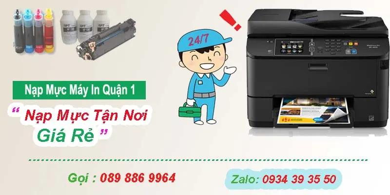

Nạp mực in Quận 1 | Bơm Mực Tận Nơi 24/7
Công ty nạp mực máy in quận 1 là đơn vị có kinh nghiệm trên 7 năm trong lĩnh vực bơm mực in , sửa máy in giá rẻ ở quận 1, cửa hàng mực in của chúng tôi nằm tại địa chỉ Tk 12/21 Bến Chương Dương, Phường Cầu kho quận 1. Mực in Hi-Tech nhận thay mực in tận nơi, Hotline: 089 886 9964 - Zalo: 0934 393550
Tel : 089 886 9964 Zalo : 0934 39 35 50
Tới nhanh nhất chỉ 20 Phút

Nạp Mực Giá Rẻ
▶ Quý khách hàng cần bơm mực máy in nhanh tại quận 1 ?
Trung tâm mực in Hi-Tech: với đội ngũ kỹ thuật viên đông đảo luôn túc trực tại Quận 1. vì vậy khi quý khách hàng cần nạp mực máy in tận nơi nhanh ở quận 1 hay sửa máy tin tại nhà quận 1. Kỹ thuật viên sẻ đến ngay chỉ 20 phút.
↓
▶ Giá bơm mực in tại quận 1 là bao nhiêu ?
+ giá nạp mực máy in laser trắng đen thông thường: chỉ 90k
+ Nạp mực máy in Samsung thông thường : 120k
+ Nạp mực máy in brother trắng đen : 120k – 140k
+ Bơm mực in đen trắng các dòng : ricoh – Panasonic : giá 150k
+ Nạp mực máy in phun màu (mực nước ) các loại HP – canon – epson : 90k
+ Thay mực máy in laser màu như: Hp – Canon – Brother – Oki : từ 250k – 450k tùy dòng máy
Quý khách hàng có thể tham khảo bảng giá nạp mực phía dưới. Hoặc cho Hi-Tech biết mã máy in. Nhân viên tư vấn sẻ báo giá chính xác
Bảng giá đã bao gồm : mực nạp , tiền công và không phát sinh chi phí khác
↓
▶ Cam kết - hỗ trợ nạp mực in ở quận 1 của Hi-Tech:
+ Tại quận 1 – kỹ thuật viên của hi-tech sẻ đến tận nơi công ty, doanh nghiệp, nạp mực máy in tại nhà của quý khách hàng
- Chỉ nhận thanh toán khi quý khách hàng hài lòng về dịch vụ mực in của hi-tech.
- Kỹ thuật viên mực in sẻ đến nhanh nhất sau khi nhận được yêu cầu của khách hàng.
- Công Ty bơm mực in tại quận 1 có xuất hóa đơn VAT đầy đủ
- Hỗ trợ công nợ cuối tháng, xuất hóa đơn thanh toán 1 lần theo nhu cầu quý công ty, doanh nghiệp (Có thể liên hệ qua số điện thoại : 089 886 9964 - Zalo : 0934 39 35 50)
- Hỗ trợ - hướng dẫn sử dụng máy in. Hướng dẫn cài đặt máy in miễn phí qua zalo, ultraviewer
- Xem thêm: ► Hỗ trợ cài đặt máy in miễn phí
- Ở quận 1 - Kỹ thuật mực in Hi-tech làm việc các ngày trong tuần, thứ 7 - chủ nhật và các ngày nghĩ lễ, Trong trường hợp quý khách hàng cần bơm mực ngoài giờ hoặc bơm mực in buổi tối tại quận 1, Quý khách có thể liên hệ trước 6 giờ chiều, Hi-Tech sẻ cữ kỹ thuật viên đến đúng giờ.
↓
▶ Ngoài bơm mực máy in ở quận 1 - Hi-Tech còn có các dịch như:
- Sửa chữa máy tính PC, Laptop
- Cài đặt windown và các phần mềm ứng dụng
- Lắp đặt mạng, thi công tổng đài điện thoại
- Sửa chữa lắp đặt camera an ninh.
- Sửa máy in tại nhà giá rẻ
Nếu tin dùng dịch vụ thay mực máy in của Hi-Tech: Quý khách hàng Liên hệ Hotline : 089 886 9964 hoặc nhắn tin Zalo: 0934 39 35 50 . Kỹ thuật viên sẻ đến ngay chỉ 20 phút
Xem thêm: Chi nhánh bơm mực in tại quận 3
Bảng Giá Nạp Mực Máy In Tận Nơi Quận 1 => Click <= <
Công ty nạp mực máy in tận nơi quận 1 luôn hướng đến mục tiêu phát triển trên cơ sở Nhanh - Chất Lượng - Uy Tín, sự hày lòng của quý hàng là thành công của chúng tôi. Khi máy in hoặc máy tính gặp sự cố hãy gọi cho chúng tôi 089 886 9964 trong vòng 20 phút sẻ có kỹ thuật đến khắc phục nhanh chóng.
Với kinh nghiệm hơn 10 năm trong lĩnh vực bơm mực máy in tại nhà quận 1, Hi-Tech luôn tự hào là một trong những công ty dẫn đầu trong lĩnh vực nạp mực máy in màu tại quận 1 uy tín, đội ngũ kỹ thuật viên tay nghề cao, luôn túc trực tại quận 1, nạp mực nhanh, khắc phục sự cố máy in kịp thời
Tại quận 1 chúng tôi còn nhận bảo trì máy in định kỳ, thay mực in tại quận 1 có hỗ trợ công nợ cuối tháng, xuất hóa đơn vat đầy đủ theo yêu cầu của quý khách hàng, bơm mực nhanh, có bảo hành tận nơi uy tín
Cửa hàng mực in của hitech tại quận 1 của hi-tech có địa chỉ TK 12/21 Bến Chương Dương, phường cầu kho, quận 1, nhận thay mực máy in tất cả các loại hp - canon - samsung - brother - ricoh... thay mực in trắng đen bơm mực máy in màu hp tại nhà giá rẻ
Địa chỉ: TK 12/21 Bến Chương Dương, P. Cầu Kho, Quận 1
Chuyên : Nạp mực in quận 1 giá rẻ
- Nạp mực máy in quận 1 laser trắng đen tận nơi: ✅ Hp - Canon - Brother - xeroc..
- Bơm mực máy in quận 1 laser màu.
- Đổ mực máy in phun màu: Epson - Canon - Hp ....
- Sửa máy in tận nơi quận 1
- Sửa máy tính tại nhà Quận 1,2,3..Tân Bình, Bình Tân....
- Nạp mực máy in tận nơi giá rẻ
- Thay mực máy in Ricoh Sp 150Su, Sp 200, Sp 310 ...
Hi-Tech Computer cam kết : Nhanh Nhất – Rẻ Nhất – Chất Lượng Nhất
Dịch vụ tin học Hi-Tech HCM gởi đến quý khách lời chào trân trọng nhất. Cảm ơn quý khách đã sử dụng dịch vụ nạp mực máy in giá rẻ quận 1 của công ty chúng tôi trong thời gian qua. Với độ ngũ kỹ thuật viên tay nghề cao, nhiều năm kinh nghiệm, chúng tôi luôn đặt tiêu chí: " Khách hàng là thượng đế" lên hàng đầu
Với kinh nghiệm trên 10 năm trong lĩnh vực bơm mực máy in tại quận 1, sửa chữa máy in các loại. Tin học Hi-Tech tự hào là một trong những công ty tiên phong về mực in máy in. Công ty HiTech nhận nạp mực in các loại như. Nạp mực in HP - Canon - Samsung - Brother - Panasonic - Lexmark ...
Tin học Hi-Tech: Nhập Nạp mực in tại nhà giá rẻ. Thay mực in tại quận 1 cho công ty, doanh nghiệp, Trường học, Các tổ chức ... Có xuất hóa đơn đỏ theo nhu cầu khách hàng. Nhận bảo trì định kỳ máy tính, máy in và các thiết bị văn phòng.
Tin học Hi-Tech nhận: bơm mực máy in ngoài giờ tại quận 1. Tại quận 1, Hi-Tech nhận nạp mực in vào thứ 7, chủ nhật và các ngày nghĩ lễ. Khi quý khách hàng cần bơm mực máy in gấp buổi tối vui lòng liên hệ với Tin học Hi-Tech Trước 5h30.
Dịch vụ mực in của Hi-Tech hỗ trợ, Tư vấn miễn phí khách hàng 24/7. Hỗ trợ cài đặt driver qua ultraviewer, Điện thoại...
Ngoài ra chúng tôi còn có các dịch vụ như:
- Kiểm tra, sửa chữa, cài đặt phần mềm máy in, máy fax
- Nạp mực máy in laser trắng đen: Hp, Canon, Brother, Samsung...
- Nạp mực máy in laser màu : HP, Canon, Brother......
- Đổ mực máy in phun màu tận nơi: HP, Canon, Epson...
- Thay thế linh kiện máy in, mực in chính hãng, giá rẻ
- Đổ mực máy in chất lượng, kiểm tra sự cố máy in, máy fax...
- Dịch vụ vệ sinh mực in, máy in tận nơi Tp.HCM
- Dịch vụ bơm mục máy in giá rẻ ở sài gòn
Xem thêm : địa chỉ nạp mực in quận 2
Quy trình bơm mực in quận 1
In bảng test, thông báo tình trạng máy ban đầu cho khách.
Lựa chon mực in theo đúng mã máy in cần nạp mực
Tiến hành đổ mực, vệ sinh hợp mực sạch sẻ, không để mực rơi ra ngoài
Reset mực nếu máy in báo
In bảng test gởi khách hàng kiểm tra.
Nếu bảng in test đẹp thì viết hóa đơn và lưu thông tin khách hàng
Mực nạp cho các dòng máy laser Trắng Đen
Bơm mực máy in tận nơi quận 1 Hp/ Canon laser 12A/35A/49A/05A/15A.. như HP 1100, 3200, 1150, 1200, 1300, 1020, 1160, 1320, P2015, Canon LBP-810, 1120, 1210, 2900, 3200, 3300, P1005, P1006, P2015, M1522n, 1522nf, P1505, P1505n, 2035, 2055.. giá 90.000 vnđ/ bình
Nạp mực máy in nhanh quan 1 : HP/ Canon laser A3 giá 210.000 vnđ
Thay mực máy in uy tín quận 1 Samsung ML-1160, 1710, 2010, 1640, 4200, 4300.. giá 120.000 vnđ
Đổ mực máy in màu quận 1: Lexmark Optra E120, E210, E220, E250, E350, E352, E460, E360, E260, X364, X363.. giá 120.000 vnđ
bơm mực máy in Xerox quận 1 Phaser 3110, 3210, 3116, 3117, 3121, 3122, 3124, 3130, 3120/ Epson EPL 5500, 5700, 5800, 5900, 6100, M-1200 PE1200 giá 120.000 vnđ
bơm mực máy in tại nhà quận 1 Xerox Xerox Phaser 3110, 3210, 3116, 3117, 3121, 3122, 3124, 3130, 3120, 3125,31503200,MFP 3220, 3250; Xerox WorkCentre PE 16, 3119 giá 120.000 vnđ
Nạp mực in Brother quan 1 HL-2030, 2040, 2070N, 2140, 2170, 5340, 5350, 5370, 5380, 1650, 1850, 1870, 5040, 5050, 5070, DCP-7020, 7220, 7225, 7420, 7820, 9680, 9180, 9160, 9030, 9070 giá 130.000 vnđ
Nạp mực máy in quận 1 hitech Panasonic KX-FLB 801, 811, 851, KX-FA 85 giá 150.000 vnđ
Các Dịch Vụ Liên Quan Tại Quận 1
- Công Ty Nạp mực máy in quận 1 HP - Canon
- Công Ty Bơm mực máy in quận 1 : A3, A4
- Công Ty Bơm mực máy in tại nhà quận 1 : Hp, Canon, Brother ...
- Công Ty Thay mực máy in Samsung quận 1
- Cửa hàng Nạp mực máy in ở quận 1 HCM
- Công Ty Đổ mực máy in Recoh tận nơi quận 1 HCM
- Dịch vụ Đổ mực máy in quận 1 : samsung xerox
- Dịch vụ Nạp mực máy in brother ở quận 1 HCM
- Dịch vụ thay mực tại quận quận 1 giá rẻ
- Dịch vụ Đổ mực máy in các loại Panasonic, xerox, recoh
- Cửa hàng bơm mực in tại nhà quận 1 giá rẻ
Quận 1 bơm mực ở đâu ?
- Dịch vụ tận nơi Sửa máy in bị kẹt giấy ở quận 1
- Dịch vụ Sửa máy in báo lỗi đèn đỏ, không in được tại quận 1
- Sửa máy in tại nhà không láy giấy lên được tại quận 1
- Sửa máy in tại nhà bị hư không in được tại nhà quận 1
- Sửa máy in tại nhà không lên nguồn ở quận 1
- Sửa máy in tận nơi bị lem, nhòe mực ở quận 1
- Sửa máy in không nhận mực in ở quận 1 Tp. HCM
Công Ty Dịch Vụ Nạp Mực Máy In Tại Các Quận Tp HCM
Quay về Trang Chủ - nap muc may in quan 1 hitech
Bơm mực máy in tại nhà 247
- Bơm mực máy in quận 3
- nạp mực in tại nhà quận 5
- Cửa hàng nạp mực in quận 6
- Thay mực máy in quận 10
- Bơm mực in quận 11
- Sửa máy in quận tân bình
- sửa máy in quận bình thanh
Thay mực in tận nơi
- Nạp mực in quận tân bình
- Thay mực in quận tân phú
- Nạp mực in quận bình tân
- Bơm mực máy in tại phú nhuận
- Nạp mực in bình thạnh
- Nạp mực máy in màu
- Bơm mực in gia lai
Địa bàn nhận nạp mực máy in tại Quận 1
Từ cửa hàng ở 79 Bắc Hải (Quận 10) sang Quận 1 khoảng 4,5 km, kỹ thuật chạy mất chừng 15 phút. Đây là quãng đường đi lại hằng ngày nên khách gọi buổi sáng thường được nhận trong buổi.
Kỹ thuật nhận việc trên khắp các tuyến Nguyễn Huệ, Lê Lợi, Đồng Khởi, Hàm Nghi, Nguyễn Thị Minh Khai, Điện Biên Phủ, Trần Hưng Đạo và Nguyễn Trãi cùng những khu vực lân cận. Khách ở quanh chợ Bến Thành, toà nhà Bitexco, phố đi bộ Nguyễn Huệ, khu văn phòng Lê Duẩn và chợ Tân Định là nhóm gọi thường xuyên nhất, phần lớn là văn phòng, cửa hàng photo và hộ kinh doanh in hoá đơn mỗi ngày.
Nhà hoặc công ty nằm trong hẻm, trên tầng cao hay trong toà nhà văn phòng đều nhận bình thường, không tính thêm phí. Máy đặt ở đâu thì bơm mực ngay tại đó, không cần tháo máy mang đi.
Giá nạp mực máy in bao nhiêu tiền?
Bảng giá áp dụng tại TP.HCM, đã gồm công đến tận nơi — không phụ thu phí đi lại:
| Loại máy in | Giá nạp mực |
|---|---|
| HPLaser trắng đen | 90.000VNĐ / lần nạp |
| HPLaser màu | 300.000VNĐ / lần nạp |
| CanonLaser trắng đen | 90.000VNĐ / lần nạp |
| CanonLaser màu | 300.000VNĐ / lần nạp |
| BrotherLaser trắng đen | 140.000VNĐ / lần nạp |
| SamsungLaser trắng đen | 120.000VNĐ / lần nạp |
| PanasonicLaser trắng đen (máy in – fax) | 150.000VNĐ / lần nạp |
| XeroxLaser trắng đen | 120.000VNĐ / lần nạp |
| Epson · Canon · HP · BrotherMáy in phun màu | 90.000VNĐ / lần nạp |
- Giá trên đã bao gồm công nạp mực tận nơi trong nội thành TP.HCM — không phụ thu phí đi lại.
- Bảo hành đến hết mực nếu bản in bị lỗi sau khi nạp.
Câu hỏi thường gặp khi nạp mực máy in Quận 1
Có làm ngoài giờ và cuối tuần ở Quận 1 không?
Có. Nhận cả thứ 7, chủ nhật, ngày lễ và buổi tối. Cần gấp ngoài giờ thì gọi trước để kỹ thuật sắp lịch, không tính phụ phí ngoài giờ.
Bảo hành sau khi nạp mực thế nào?
Bảo hành đến khi hết hộp mực. Trong thời gian đó bản in bị mờ, lem hay sọc thì gọi lại, kỹ thuật quay lại xử lý miễn phí.
Nạp mực máy in ở Quận 1 giá bao nhiêu?
Máy in laser trắng đen 90.000đ, laser màu 300.000đ, máy in phun 90.000đ — giá đã gồm công tới tận nơi trong Quận 1, không phụ thu phí đi lại. Máy cần thay thêm linh kiện thì báo giá trước khi làm.
Khu vực nào trong Quận 1 được nhận nạp mực tận nơi?
Toàn bộ Quận 1, gồm các tuyến Nguyễn Huệ, Lê Lợi, Đồng Khởi, Hàm Nghi và vùng quanh chợ Bến Thành, toà nhà Bitexco, phố đi bộ Nguyễn Huệ. Nhà trong hẻm hay văn phòng trên tầng cao đều nhận, không tính thêm phí đi lại.
Nạp mực máy in ở khu vực gần Quận 1
Kỹ thuật phụ trách Quận 1 cũng nhận việc ở các quận sát bên. Nhà hoặc công ty nằm ở ranh giới thì bấm vào khu vực gần mình nhất để xem giá và thời gian có mặt: